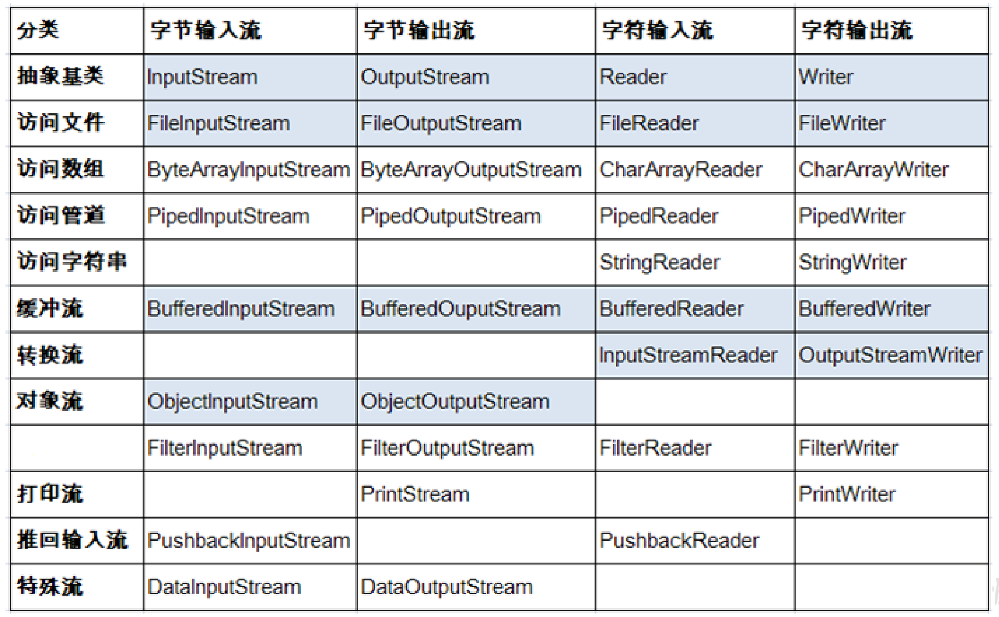

学习备注
有空可以研究一下读写方法的内部
File类使用 简介
java.io.File类:文件和文件目录路径的抽象表示形式，与平台无关
File 能新建、删除、重命名文件和目录，但 File 不能访问文件内容本身。 如果需要访问文件内容本身，则需要使用输入/输出流。
想要在Java程序中表示一个真实存在的文件或目录，那么必须有一个File对 象，但是Java程序中的一个File对象，可能没有一个真实存在的文件或目录。
File对象可以作为参数传递给流的构造器
construtor 1 2 3 4 5 6 7 8 public File (String pathname) public File (String parent,String child) public File (File parent,String child)
路径分隔符
路径中的每级目录之间用一个路径分隔符隔开
路径分隔符和系统有关:
windows和DOS系统默认使用“\”来表示
UNIX和URL使用“/”来表示
根据操作系统，动态的提供分隔符
1 2 3 4 public static final String separatorFile file = new File("d:" + File.separator + "test" + File.separator + "info.txt" );
常用方法 get 1 2 3 4 5 6 7 8 9 10 11 12 13 14 15 public String getAbsolutePath () public String getPath () public String getName () public String getParent () public long length () public long lastModified () public String[] list () public File[] listFiles ()
rename 1 2 public boolean renameTo (File dest)
judgment 1 2 3 4 5 6 7 8 9 10 11 public boolean isDirectory () public boolean isFile () public boolean exists () public boolean canRead () public boolean canWrite () public boolean isHidden ()
create 1 2 3 4 5 6 7 public boolean createNewFile () public boolean mkdir () public boolean mkdirs ()
delete 1 2 3 4 public boolean delete ()
IO流原理及流的分类 java io原理
I/O是Input/Output的缩写， I/O技术是非常实用的技术，用于 处理设备之间的数据传输。如读/写文件，网络通讯等
Java程序中，对于数据的输入/输出操作以“流(stream) ” 的 方式进行。
java.io包下提供了各种“流”类和接口，用以获取不同种类的 数据，并通过标准的方法输入或输出数据。
输入input :读取外部数据(磁 盘、光盘等存储设备的数据)到 程序(内存)中。
输出output :将程序(内存) 数据输出到磁盘、光盘等存储设 备中。
流的分类
按操作数据单位不同分为:字节流(8 bit) ，字符流(16 bit)
按数据流的流向不同分为:输入流，输出流
按流的角色的不同分为:节点流，处理流
(抽象基类)
字节流
字符流
输入流
InputStream
Reader
输出流
OutputStream
Writer
io流体系 
节点流和处理流
节点流:直接从数据源或目的地读写数据
处理流:不直接连接到数据源或目的地，而是“连接”在已存 在的流(节点流或处理流)之上，通过对数据的处理为程序提 供更为强大的读写功能。
InputStream 和 Reader 是所有输入流的基类
程序中打开的文件 IO 资源不属于内存里的资源，垃圾回收机制无法回收该资 源，所以应该显式关闭文件 IO 资源。
FileInputStream 从文件系统中的某个文件中获得输入字节。FileInputStream 用于读取非文本数据之类的原始字节流。要读取字符流，需要使用 FileReader
1 2 3 4 5 6 7 8 9 10 11 int read () int read (byte [] b) int read (byte [] b, int off,int len) public void close () throws IOException
1 2 3 4 5 6 7 8 9 10 11 int read () int read (char [] cbuf) int read (char [] cbuf,int off,int len) public void close () throws IOException
OutputStream & Writer
因为字符流直接以字符作为操作单位，所以 Writer 可以用字符串来替换字符数组， 即以 String 对象作为参数
void write(String str); void write(String str, int off, int len); FileOutputStream 从文件系统中的某个文件中获得输出字节。FileOutputStream用于写出非文本数据之类的原始字节流。要写出字符流，需要使用 FileWriter
1 2 3 4 5 6 7 8 9 10 11 12 13 14 void write (int b) void write (byte [] b) void write (byte [] b,int off,int len) public void flush () throws IOException public void close () throws IOException
1 2 3 4 5 6 7 8 9 10 11 12 13 14 15 16 17 18 19 20 void write (int c) void write (char [] cbuf) void write (char [] cbuf,int off,int len) void write (String str) void write (String str,int off,int len) void flush () public void close () throws IOException
节点流(或文件流) 读取文件 1 2 3 4 5 6 7 8 9 10 11 FileReader fr = new FileReader(new File(“Test.txt”)); char [] ch = new char [1024 ];fr.read(ch); fr.close();
1 2 3 4 5 6 7 8 9 10 11 12 13 14 FileReader fr = null ; try { fr = new FileReader(new File("c:\\test.txt" )); char [] buf = new char [1024 ]; int len; while ((len = fr.read(buf)) != -1 ) { System.out.print(new String(buf, 0 , len)); } } catch (IOException e) { System.out.println("read-Exception :" + e.getMessage()); } finally { if (fr != null ) { try { fr.close(); } catch (IOException e) { System.out.println("close-Exception :" + e.getMessage()); } } }
写入文件 1 2 3 4 5 6 7 8 FileWriter fw = new FileWriter(new File(“Test.txt”)); fw.write(“hello-word”); fw.close();
1 2 3 4 5 6 7 8 9 10 11 12 13 14 FileWriter fw = null ; try { fw = new FileWriter(new File("Test.txt" )); fw.write("hello-word" ); } catch (IOException e) { e.printStackTrace(); }finally { if (fw != null ) { try { fw.close(); } catch (IOException e) { e.printStackTrace(); } } }
节点流( 或文件流) :注意点
定义文件路径时，注意:可以用“/”或者“\”。
在写入一个文件时，如果使用构造器FileOutputStream(file)，则目录下有同名文 件将被覆盖。
如果使用构造器FileOutputStream(file,true)，则目录下的同名文件不会被覆盖， 在文件内容末尾追加内容。
在读取文件时，必须保证该文件已存在，否则报异常。
字节流操作字节，比如:.mp3，.avi，.rmvb，mp4，.jpg，.doc，.ppt
字符流操作字符，只能操作普通文本文件。最常见的文本文 件:.txt，.java，.c，.cpp 等语言的源代码。尤其注意.doc,excel,ppt这些不是文 本文件。
缓冲流